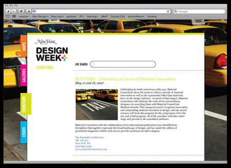
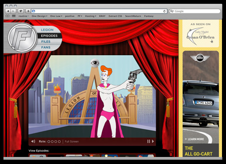
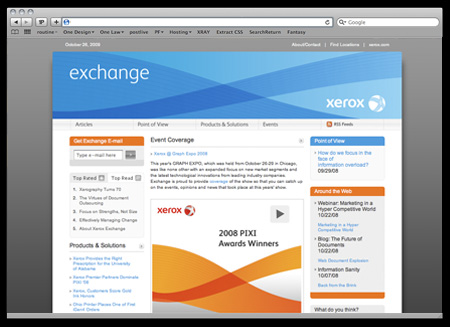
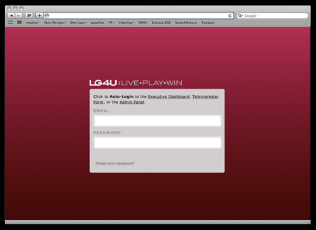
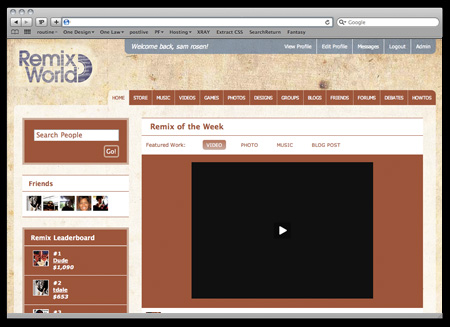
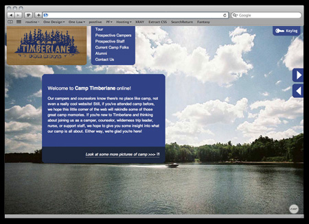
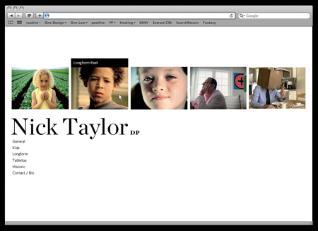

new york magazine i had the wonderful opportunity to work with new york magazine and ds9 here in chicago. i conceived and designed the entire site, as well as the photography for new york's famous Design Week.

conan o'brien the last few years i've had the opportunity to pitch a bunch of work directly to the late night show with conan o'brien. this direction was a pitch for a micro-site representing jim gaffigan's "pale force."

xerox-exchange n association with imagination publishing and under a killer holiday deadline, for the launch of xerox's new brand, i led a team and helped design this internal xerox site as well as built it to it's completion. www.xerox-exchange.com

lg metrics lg hired us to build a tool that allowed high level executives to get a realtime look into promotional events as well as a telemarketing campaign. i designed a dashboardesk tool that computed and segmented real-time data from all of these sources into one easy to use interface. www.xerox-exchange.com

iremix - university of chicago one of our biggest projects to date, i led our design team (with help from chad kouri) in developing this special site. remix world is an informal learning space online; this robust social network allows students to collaborate online, and it's a pretty amazing program. www.iremix.org

camp timberlane for boys a little bit of dream come true, i was hired to design a website for the summer camp of my childhood. we modeled an interactive version of the summer camp and built a robust user system that allows parents, counselors, alumni and campers to all to have special access to their site. www.camptimberlane.com

ioimprov i was in charge of the redesign of ioimprov.com. io has two locations, so we built a solution that worked for both locations while maintaing an better level of representing their brand. www.ioimprov.com

nick taylor, dp i designed a simple portfolio website for nick taylor. the site mainly uses javascript to allow for a easy to use, yet unique portfolio site.
